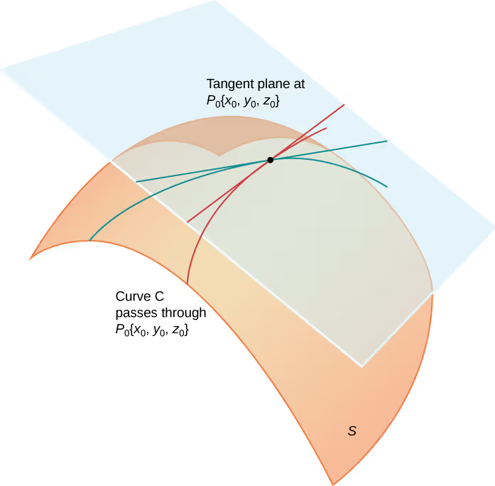
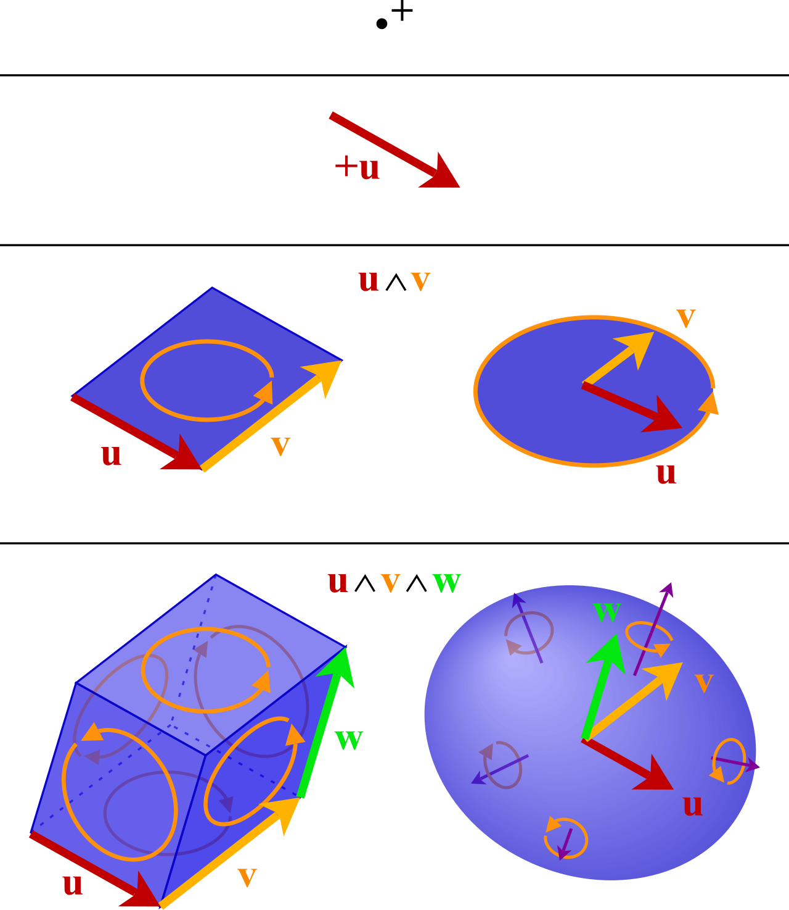
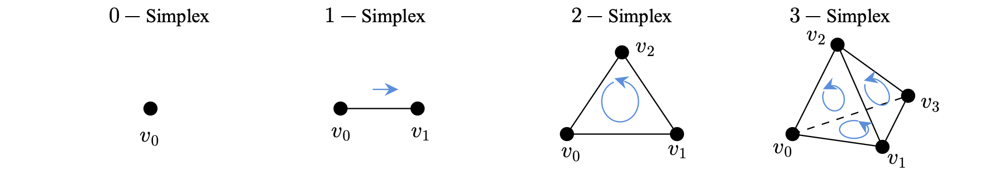
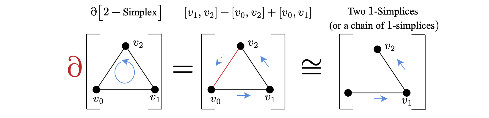

An Introduction to De Rham Cohomology
Consider some curve $C$ through a smooth $3$-dimensional surface $S$. For any particular point along that curve, we can imagine constructing a vector in the direction of the curve at that point (this derivative is known as the directional derivative). Letting $P_{0}$ denote this point, we can imagine constructing a tangent plane at that point $T_{p} S$ whose basis vectors correspond to orthogonal (perpendicular in the tangent plane), directional derivatives at that point. For a function $f(x,y,z)$, we can express such a basis by ${ \frac{\partial f}{\partial x}, \frac{\partial f}{\partial y}, \frac{\partial f}{\partial z} }$.

This process of constructing a tangent line with a basis orthogonal to directional derivatives can be generalized for any particular point on a smooth surface, and it is in light of this generalization that we introduce $1$-forms. Formally, $1$-forms are just functions $\omega :T_{p}\mathbb{R}^{n}\rightarrow \mathbb{R}$ defined by
However, in context of the tangent plane of a smooth manifold defined by some $f$ (given by our previous examples), we can express the $1$-form for that point and for a vector on that manifold by
where $p=(x_{1}, \dotsc, x_{n})$ is some point we want to construct a tangent plane at and $v$ is some vector that we want to compute with our $1$-form. It's important to understand that a $1$-form is a function from a derivative in a tangent plane to a signed magnitude (so we can have negative magnitudes).
With $1$-forms having been explained, we can now consider what's known as a $2$-form. A $2$-form is a function $\omega_{1} \land \omega_{2}: T_{p}\mathbb{R}^{n}\rightarrow \mathbb{R}$ that takes as an input, two vectors (ordered) $v_{1}$ and $v_{2}$ at a point $p$ in a tangent space $T_{p}\mathbb{R}^{n}$. The $2$-form $(\omega_{1} \land \omega_{2})_{p}$ is defined by
Effectively, one can think of $2$-forms as expressing the signed area (hence our mention of the determinant) formed by the $1$-forms of two vectors $v_{1}$ and $v_{2}$.
We can generalize this for $k$-vectors any point to obtain what's known as a differential $k$-form, which can be defined formally by
$$\left(\bigwedge_{i=1}^{k} \omega_{i}\right)( v_{1} ,\dotsc ,v_{k}) =\det \begin{pmatrix} \omega_{1}( v_{1}) & \cdots & \omega_{1}( v_{k}) \\ \vdots & \ddots & \vdots \\ \omega_{k}( v_{1}) & \cdots & \omega_{k}( v_{k}) \end{pmatrix} $$
Now, having defined $k$-forms more generally, one might be curious as to how these $k$-forms can be related to each-other. We can actually define a function over $k$-forms called the exterior derivative $d$ which takes as input, a $k$-form and outputs a $k+1$ form. Formally, the exterior derivative is defined by a unique linear mapping from $k$-forms to $k+1$-forms defined as having the following properties:
- 0-Form Rule: The operator $d$ applied to the $0$-form $f$ is the differential $df$ of $f$.
- Linearity: If $\alpha$ and $\beta$ are two $k$-forms, then $d( a\alpha +b\beta ) =ad\alpha +bd\beta$ for any field elements $a$ and $b$.
- Anti-Symmetry: If $\alpha$ is a $k$-form and $\beta$ is an $l$-form, then $d( \alpha \land \beta ) =d\alpha \land \beta +( -1)^{k} \alpha \land d\beta$.
- Nilpotency: If $\alpha$ is a $k$-form, then $d( d\alpha ) =0$.
We can express this function algebraically by:
$$ \text{If } \omega =\sum_{I} f_{I} dx_{i_{1}} \land dx_{i_{2}} \land \dotsc \land dx_{i_{k}}, $$ $$ \text{where } I \text{ represents a set of indices } i_{1} < i_{2} < \dotsc < i_{k}, \text{ then} $$ $$ d\omega =\sum_{I} df_{I} \land dx_{i_{1}} \land dx_{i_{2}} \land \dotsc \land dx_{i_{k}} $$
The notation above is a bit strange but this primarily is just due to the fact that it's hard to notationally express how the wedge product relates back to the function $f$ defining our surface. Effectively though, if one imagines the sum generated by the determinant of $k$-form when expanded out, every coefficient of a differential form $dx_{i}$ is just going to be some function $f$. The exterior derivative just takes that function out for each differential form, takes all of the partials of $f$ at that point, then takes the wedge product of those partials with the corresponding $dx_{i}$. A geometric interpretation of the exterior derivative can be provided by considering how the swirling/signed area/volume "changes" as we move up in dimensions in the picture below. A positive $d\omega$ means that as we move up to a higher dimension, our measurement picks up a net positive "swirl/area/volume". The same goes for movement to a lower dimension.

$$ \omega =\left(\frac{\partial f}{\partial x}\right) dx+\left(\frac{\partial f}{\partial y}\right) dy $$
To find the exterior derivative, we differentiate the weights,
$$ d\omega =\left( d\left(\frac{\partial f}{\partial x}\right) \land dx\right) +\left( d\left(\frac{\partial f}{\partial y}\right) \land dy\right) $$ $$ d\omega =\left(\left(\frac{\partial }{\partial x}\left[\frac{\partial f}{\partial x}\right] dx+\frac{\partial }{\partial y}\left[\frac{\partial f}{\partial x}\right] dy\right) \land dx\right) +\left(\left(\frac{\partial }{\partial x}\left[\frac{\partial f}{\partial y}\right] dx+\frac{\partial }{\partial y}\left[\frac{\partial f}{\partial y}\right] dy\right) \land dy\right) $$ $$ d\omega =\left(\left(\frac{\partial ^{2} f}{\partial x^{2}} dx+\frac{\partial ^{2} f}{\partial y\partial x} dy\right) \land dx\right) +\left(\left(\frac{\partial ^{2} f}{\partial x\partial y} dx+\frac{\partial ^{2} f}{\partial y^{2}} dy\right) \land dy\right) $$
Distributing the wedge, we get
$$ d\omega =\left(\frac{\partial ^{2} f}{\partial x^{2}}( dx\land dx) +\frac{\partial ^{2} f}{\partial y\partial x}( dy\land dx)\right) +\left(\frac{\partial ^{2} f}{\partial x\partial y}( dx\land dy) +\frac{\partial ^{2} f}{\partial y^{2}}( dy\land dy)\right) $$
By the Nilpotency property of the wedge product, we know that $dx\land dx=0$ and $dy\land dy=0$, so
$$ d\omega =\left(\frac{\partial ^{2} f}{\partial y\partial x}( dy\land dx)\right) +\left(\frac{\partial ^{2} f}{\partial x\partial y}( dx\land dy)\right) $$
Next, recall the anti-symmetry property of the wedge product. That is, $dx\land dy=-( dy\land dx)$. Applying this to our expression above gives
$$ d\omega =-\left(\frac{\partial ^{2} f}{\partial y\partial x}( dx\land dy)\right) +\left(\frac{\partial ^{2} f}{\partial x\partial y}( dx\land dy)\right) $$
Finally, recall Clairaut's Theorem which states that for all differentiable (basically analytic at the region also) functions $f$,
$$ \frac{\partial ^{2} f}{\partial y\partial x} =\frac{\partial ^{2} f}{\partial x\partial y} $$
From this, we know that our coefficients for our wedge products are equal and thus, we can conclude for this example that
$$ d\omega =0 $$
This identity that we've just derived for an arbitrary $1$-form tells us that if a $1$-form is exact (aka, gradient of a smooth potential function), then it is necessarily closed (it's infinitesimal circulation is $0$/$d\omega =0$). This result is generalizable and will play a critical role in De Rham's Theorem.
Consider now that in $\mathbb{R}^{3}$, every vector field $\mathbb{F} =\langle P,Q,R \rangle$ consists of three component functions $P(x,y,z)$, $Q(x,y,z)$, and $R(x,y,z)$. These functions basically define the weights that make up all possible linear combinations for points on the field. That is, for any point $p\in \mathbb{F}$, there exists an $(a,b,c)$ such that
$$ p=P( a,b,c)\mathbf{i} +Q( a,b,c)\mathbf{j} +R( a,b,c)\mathbf{k} $$
In the context of tangent planes, we can think of these basis components $\mathbf{i}$, $\mathbf{j}$, and $\mathbf{k}$ as $dx$, $dy$, and $dz$. This allows us to define $1$-forms as linear combinations
$$ \omega_{p} = P( p) dx+Q( p) dy+R( p) dz $$
Now, recall that for a field to be the gradient of some potential $( F=\nabla f)$, then the mixed partials must be equal.
$$ \frac{\partial P}{\partial y} = \frac{\partial Q}{\partial x} , \quad \frac{\partial P}{\partial z} = \frac{\partial R}{\partial x} , \quad \frac{\partial Q}{\partial z} = \frac{\partial R}{\partial y} $$
If these equations are satisfied, we can derive, just as in the last case, that
$$ d\omega = 0 $$
Moving to $n$-dimensions, these equations generated by the $k$-for being exact can be generalized by
$$ \forall i,j\in {0,1,\dotsc ,n} .\frac{\partial A_{i}}{\partial x_{j}} -\frac{\partial A_{j}}{\partial x_{i}} =0 $$
These are what's known as the integrability conditions of some $k$-form. Now imagine that we are given some $k$-form
$$ \omega =\sum_{i=1}^{n} A_{i} dx_{i} $$
Utilizing our result regarding integrability conditions, we know that if a function $f$ exists such that
$$ df=\sum_{i=1}^{n} A_{i} dx_{i} $$
then we can integrate both sides to obtain $f$ over some curve $\gamma$ to obtain
$$ \int_{\gamma } df=\int_{\gamma }\sum_{i=1}^{n} A_{i} dx_{i} $$
By the Fundamental Theorem of Calculus, this tells us that
$$ f( b) -f( a) =\int_{\gamma }\sum_{i=1}^{n} A_{i} dx_{i} $$
This result is connected to what's known as the Poincare Lemma and is considered significant because it means that if the a differential $k$-form is exact, then the integral over any path $\gamma$ with starting point $a$ and endpoint $b$ results in the same signed $n$-dimensional area, with one small caveat. This small caveat is that if we integrate $df$ over a path $\gamma$ that contains a hole (or discontinuity), then this formula will not hold. Consider what's known as the d'Alembert Example:
$$ d\omega =-\frac{y}{x^{2} +y^{2}} \ dx+\frac{x}{x^{2} +y^{2}} \ dy $$
We can show that by taking the second partials, $d\omega$ indeed is zero, however if you take the closed line integral clockwise and counter-clockwise around the unit circle, you end up with two results. The clockwise contour will give you a value of $\pi$ and the counter-clockwise contour will give you a value of $-\pi$. This happens because integrating over the unit circle integrates over a hole at $(0,0)$. (this is in some ways like the $\mathbb{R}^{n}$ version of Cauchy's Integral Theorem if you happen to be familiar with that)
This discrepancy we find with the d'Alambert Example can be interpreted as essentially communicating that the topological properties (specifically presence of holes) of the shape that we happen to be integrating over constrains our integration. To understand more precisely how this happens, we must take up a topological point of view.
In topology, there is something called a simplex. You can think of a simplex $s$ as basically directed chunks of $\mathbb{R}^{n}$. A $0$-simplex just corresponds to a point, denoted $[v_{0}]$. A $1$-simplex corresponds to a directed line segment $[v_{0}, v_{1}]$. A $2$-simplex corresponds to a filled in, oriented triangle $[v_{0}, v_{1}, v_{2}]$. Lastly, a $3$-simplex $[v_{0}, v_{1}, v_{2}, v_{3}]$ corresponds to a filled in Tetrahedron.

It's worth noting how we chose to notate our simplices. In particular, our $v$'s correspond to points that when transformed into a simplex, produce a filled in convex shape. The filled in space of our shape is called the interior of our simplex, denoted $\mathrm{int}( s)$. the boundary of our simplices corresponds to the points of our simplex plus the lines that connect these points. Having read up to this point, you may notice a similarity between $k$-forms and simplices. A $k$-form can be geometrically represented as the signed $k$-dimensional "area" of some vectors. This is essentially the same thing as what we've done with our simplices! The similarities however between the topological notion of simplices and the language we've developed for differential forms continue. With $k$-forms, we can move up in dimension by taking the exterior derivative of the $k$-form. For $k$-simplices, we have essentially the opposite tool known as the boundary operator $\partial s$. Before stating the general form of the boundary operator, we demonstrate the boundary operator's effect geometrically. For a $1$-simplex $[v_{0}, v_{1}]$, the boundary operator is defined by
$$ \partial [ v_{0} ,v_{1}] =[ v_{1}] -[ v_{0}] $$
In essence, this is equivalent to removing a vertex from our simplex (specifically, $v_{0}$), and then summing what's remaining. In the case of a $1$-simplex, it should hopefully be geometrically clear that removal of $v_{0}$ produces one $0$-simplex (a point $v_{1}$). A similar geometric result happens when we take the boundary of a $2$-simplex. In particular, the boundary operator for a $2$-simplex is given by
$$ \partial [ v_{0} ,v_{1} ,v_{2}] =[ v_{1} ,v_{2}] -[ v_{0} ,v_{2}] +[ v_{0} ,v_{1}] $$

Thus, we see that the boundary operator over a $2$-simplex produces two $1$-simplices which we express as a sum. In general, we can express the boundary operator formula for a $k$-simplex by
$$ \partial [ v_{0} ,\dotsc ,v_{k}] =\sum_{i=0}^{k}( -1)^{i}\left[ v_{0} ,\dotsc ,\widehat{v_{i}} ,\dotsc ,v_{k}\right] $$
where $\widehat{v_{i}}$ means that $\widehat{v_{i}}$ is the simplex that has been removed. We can geometrically interpret the boundary opeerator as a transformation that takes in a $k$-simplex, removes one of it's faces, then breaks the simplex into a sum of $k-1$-simplices.
Now, what happens if we take the boundary operator over a $k$-simplex twice? For times sake, we will not present the derivation here, however the result of taking $\partial ^{2} s$ of any simplex $s$ is actually $0$. That is, for any $k$-simplex $s$,
$$ \partial ^{2} s=0 $$
This is exactly analogous to our exterior derivative operator $d^{2} \omega =0$! From this, we can essentially make the connection that the way measurements "swirl" upwards into higher dimensions exactly mirrors the way that shapes close up on their boundaries.
Finally, before we complete our connection between $k$-forms and $k$-simplices as well as the exterior derivative $d$ and the boundary operator $\partial$, we must introduce the basic notion of a chain-simplices. So far, all of our simplices have essentially formed minimally complex polygons. Rather than thinking of just one $k$-simplex, we can think of a linear combination of $j$, $k$-simplices. That is, we can express a $j$-chain of $k$-simplices as $c=\sum\nolimits_{i=1}^{j} a_{i} s_{i}^{k}$, where $a_{i}$ is a sequence of coefficients that constitute the linear combination of the $j$-chain. For curved shapes like circles, we can actually approximate them as $\infty$-chains of $1$-simplices for example. Importantly though, one should note that $j$-chains of $k$-simplices always have boundary $0$. For sake of length, we do not expound on that result here.
Finally, we connect our findings through the generalized Stokes' Theorem
$$ \int_{s} d\omega =\int_{\partial s} \omega $$
In other words, if we take the integral of the exterior derivative of a $k$-form over a simplex, then that integral is equal to the integral of that $k$-form over the boundary of that simplex.
Returning to our d'Alembert example, recall that we found that $d\omega =0$ but the integral around a circle was not $0$. If $\omega =df$ (so $\omega$ is exact), then applying the generalized Stokes' Theorem, we get
$$ \int_{\gamma } df=\int_{\partial \gamma } f $$
Since the boundary of the unit circle (an infinite chain of $1$-simplices) is a $0$-simplex (or $0$), then we know that $\partial \gamma =0$ and thus $\int_{\partial \gamma } f$ must be $0$ because the path is nothing! Notice that in a space with a hole (like d'Alembert's example), we can have a simplex $\gamma$ that's a cycle $(\partial \gamma =0)$ but which is not a boundary (so it cannot be the edge of any filled in $2$-simplex because the hole is in the way).
Thus, we have the following distinctions: A closed form is a $k$-form $\omega$ such that $d\omega =0$ and we proved earlier that exactness implies being closed (There exists an $f$ such that $\omega =df$). A cycle $\gamma$ is a $j$-chain such that $\partial \gamma =0$. While we didn't cover the proof, it can be shown that every cycle is a boundary (There exists an $S$ such that $\gamma =\partial S$). These equations are incredibly useful for generalizing integration across different manifolds/chains, however they sometimes don't have closed integrals of zero when holes exist over our region. This is where De Rham Cohomology comes in. The $k$-th De Rham Cohomology Group.
$$ H_{dR}^{k} (M)=\frac{\text{Closed } k\text{-forms}}{\text{Exact } k\text{-forms}} $$
is a group that tells us exactly whether or not our $k$-forms over a region contain holes. The number of group elements $n$ in the De Rham Cohomology Group correspond to exactly $n-1$ holes over the given $k$-forms. This is an incredibly powerful result because it shows that by simply finding which $k$-forms are closed and exact, we can directly calculate the exact number of holes in some manifold.